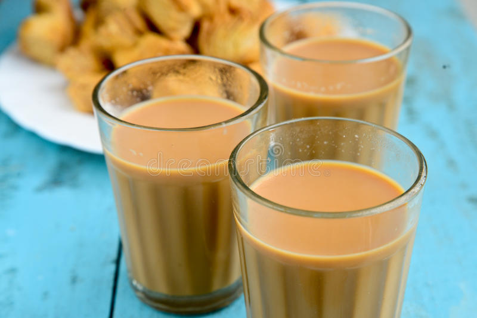

Recipe to create tea

- Boil water in a saucepan.
- Add sugar and tea powder in it and boil it for 3-4 minutes on medium flame.
- Add milk and boil it over medium flame for 6-7 minutes or until bubble starts to rise. You will see the
change in color of the tea from milky shade to brown shade when it is ready.
- Turn off the gas and strain tea in cups